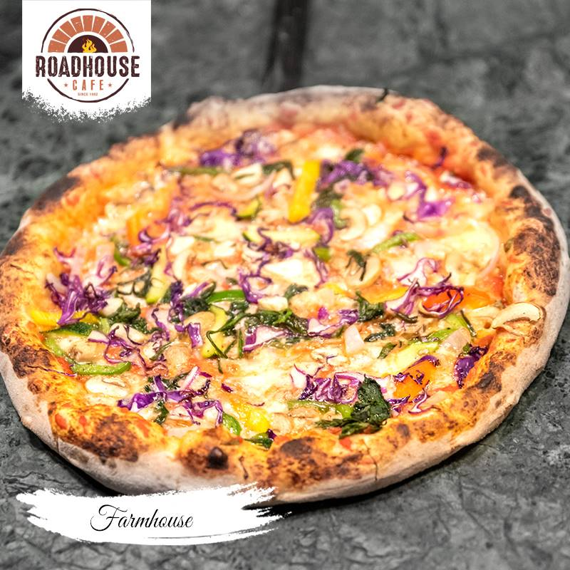
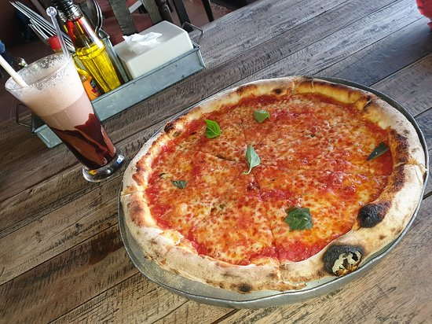
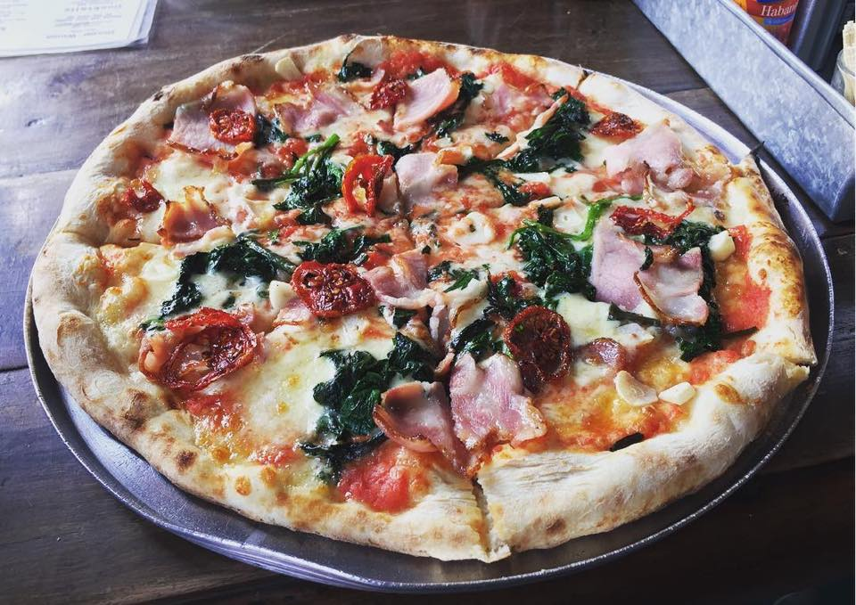

This Italian Farmhouse Rustic Pizza is a complete meal on a pizza. Includes prosciutto, ricotta, roasted yellow peppers,basil, pistachios and balsamic vinegar. My husband loves making pizza - he grills it in the summer, bakes it in thewinter, and comes up with a new flavor combo each time.Don’t worry, those traditionally awesome toppings are still present. But, it is the other toppings like balsamicvinegar, roasted yellow peppers, and crushed pistachios that book it a ticket on the train to Flavor Town.
Pizza margherita, as the Italians call it, is a simple pizza hailing from Naples. When done right, margherita pizza features a bubbly crust, crushed San Marzano tomato sauce, fresh mozzarella and basil, a drizzle of olive oil, and a sprinkle of salt.Sure, you could add some tomato if you’d like, but only if the tomato is truly ripe, red and worthy. AuthenticNeapolitan pizza margherita doesn’t require fresh tomato. Try making this pizza as written, and you won’t miss thetomato on top. Sometimes less is more.
Wood-fired pizza isn't just tastier than other kinds of pizzas, it's also healthier. The extreme heat in a wood-burning oven cooks the pizza super-fast, which helps the toppings hold onto their natural nutrients.Wood fired or brick oven pizza is exactly what its names imply. It's a type of pizza that's cooked in a brick oven. Instead of being heated by electricity or gas, a brick pizza oven employs burning wood to cook pizza.
